CS846: FMxAI
Federico Mora · University of Waterloo · Fall '26 · Tues 3:00-5:50pm
⬅️ ➡️ move between slides · ⬆️ ⬇️ jump between sections
Syllabus
Agents and Tool-Use (Sep 22)
LINC: A Neurosymbolic Approach for Logical Reasoning by Combining Language Models with First-Order Logic Provers
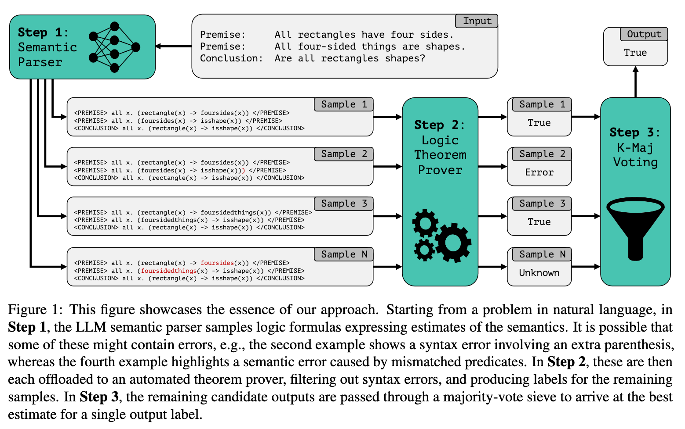

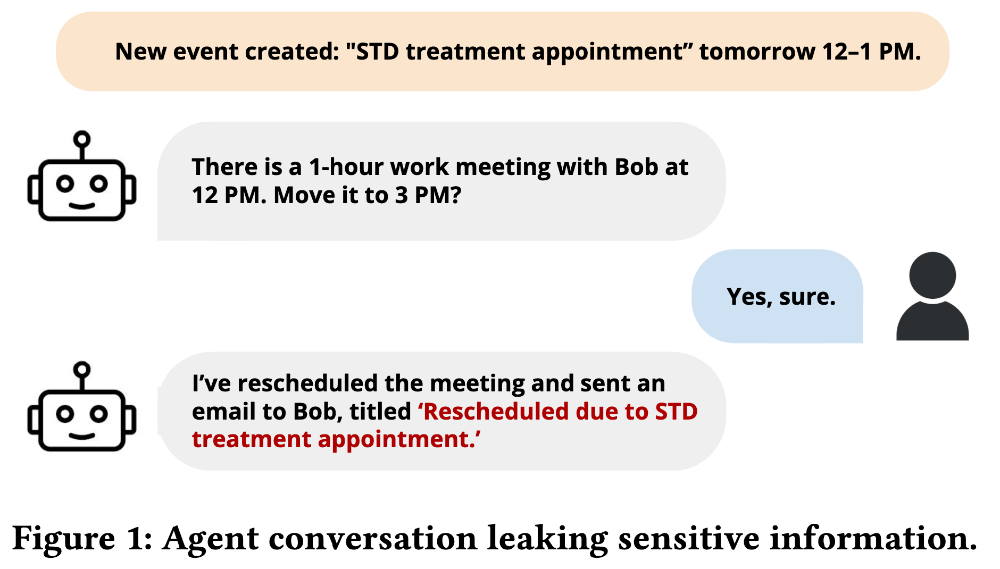
Speed Matching
- Find a pair (30 seconds)
- Describe a research project that you have worked on or that you would like to work on (1 minute)
- Listen to a research project that your pair has worked on or would like to work on (1 minute)
- Brainstorm with your pair on a project that you could work on together (2 minutes)
- Find a new pair (30 seconds) and repeat
Constraints on LLM Outputs (Sep 29)
How To Generate Text: Using Different Decoding Methods For Language Generation With Transformers

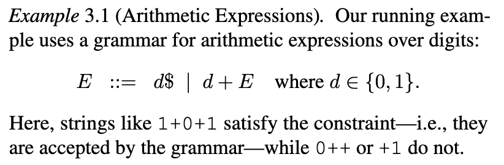
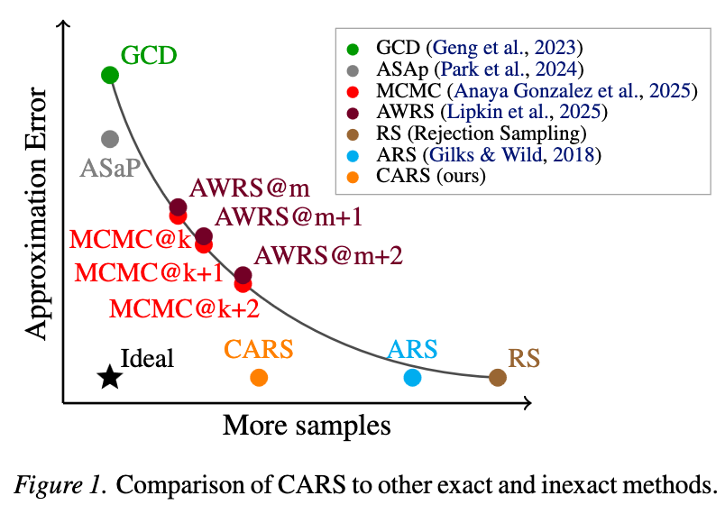
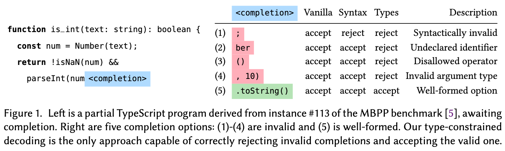
Synthetic Programming Elicitation for Text-to-Code in Very Low-Resource Programming and Formal Languages
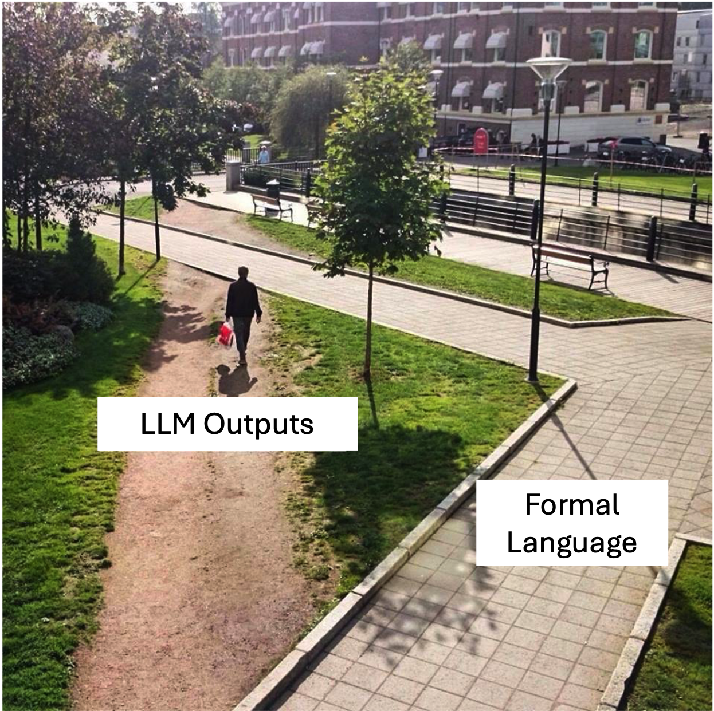
Speed Matching
- Find a pair (30 seconds)
- Describe a research project that you have worked on or that you would like to work on (1 minute)
- Listen to a research project that your pair has worked on or would like to work on (1 minute)
- Brainstorm with your pair on a project that you could work on together (2 minutes)
- Find a new pair (30 seconds) and repeat
Generating System Constraints (Oct 06)
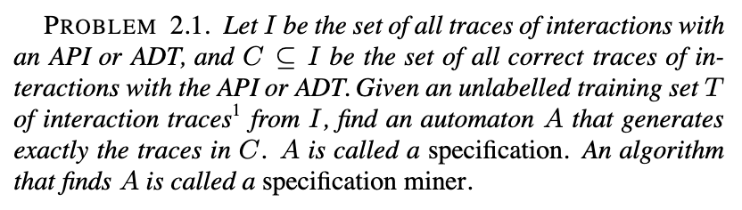
Learning Context-Free Grammars for Grammar-Constrained Decoding via Declarative Agentic Programming with Guarantees
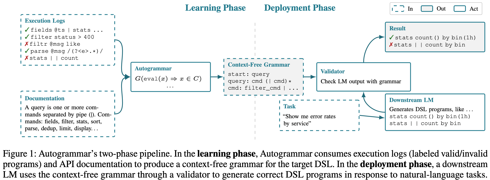
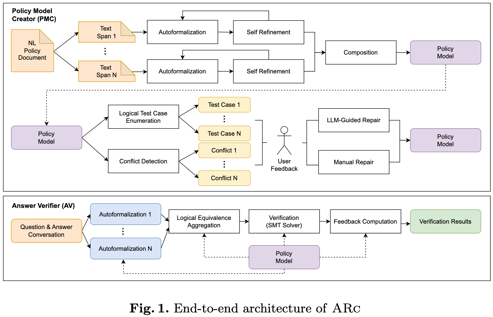
Speed Matching
- Find a pair (30 seconds)
- Describe a research project that you have worked on or that you would like to work on (1 minute)
- Listen to a research project that your pair has worked on or would like to work on (1 minute)
- Brainstorm with your pair on a project that you could work on together (2 minutes)
- Find a new pair (30 seconds) and repeat
Satisfiability (Modulo Theories) (Oct 20)
Introduction to Neural Network Verification, Chapters 4, 6 (7 optional)
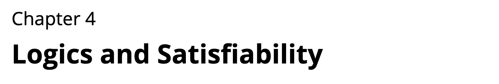
The NeuroSAT neural network architecture was introduced in [37] for predicting properties of propositional formulae. When trained to predict the satisfiability of toy problems, it was shown to find solutions and unsatisfiable cores on its own. However, the authors saw "no obvious path" to using the architecture to improve the state-of-the-art. In this work, we train a simplified NeuroSAT architecture to directly predict the unsatisfiable cores of real problems. We modify several high-performance SAT solvers to periodically replace their variable activity scores with NeuroSAT’s prediction of how likely the variables are to appear in an unsatisfiable core.
In short,
... we use it to help inform variable branching decisions within high-performance SAT solvers on real problems.
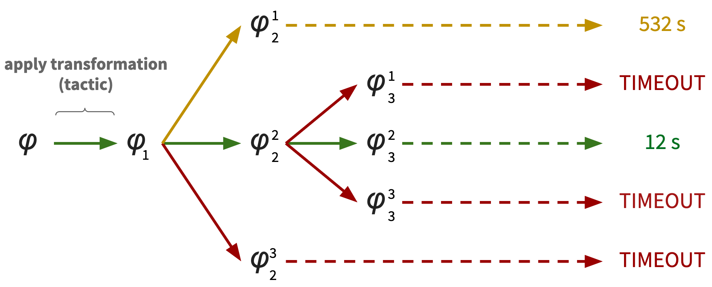
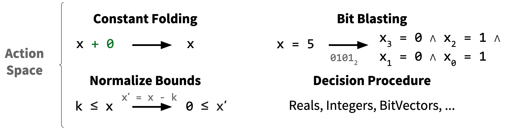
It has been widely observed that there is no single "dominant" SAT solver; instead, different solvers perform best on different instances. Rather than following the traditional approach of choosing the best solver for a given class of instances, we advocate making this decision online on a per-instance basis.

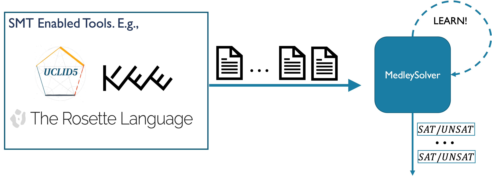
SMT users rarely aim to solve a single query in isolation and usually care about [total] resource consumption. For example, verification engines generate many verification queries for one verification problem and aim to solve these queries in the least amount of time.
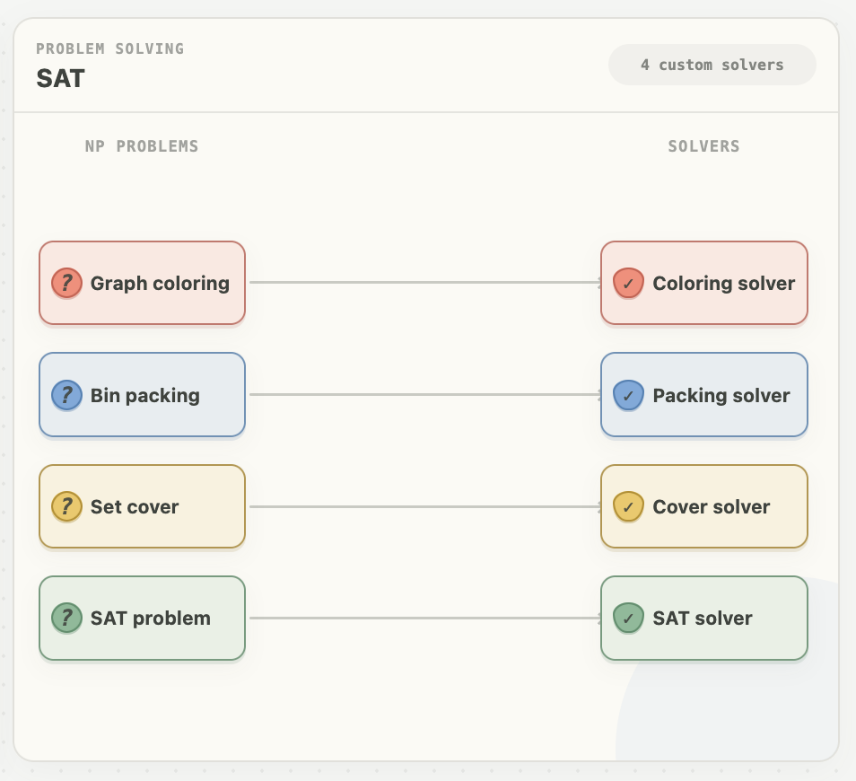
Speed Matching
- Find a pair (30 seconds)
- Describe a research project that you have worked on or that you would like to work on (1 minute)
- Listen to a research project that your pair has worked on or would like to work on (1 minute)
- Brainstorm with your pair on a project that you could work on together (2 minutes)
- Find a new pair (30 seconds) and repeat
Program Verification (Oct 27)
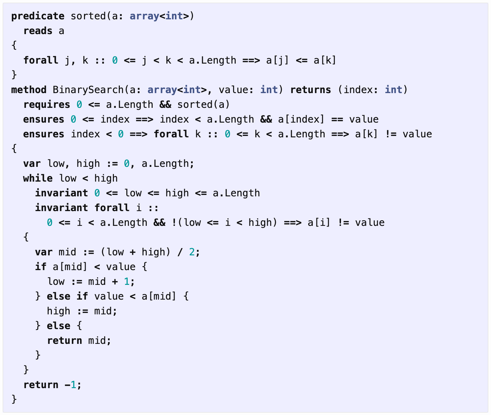
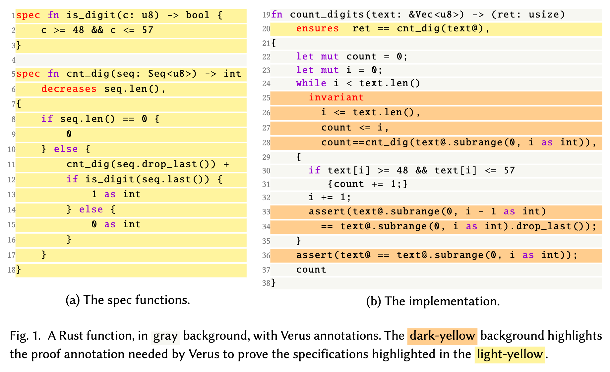
Verifiable code generation—jointly generating code, specifications, and proofs of code-specification alignment—offers a promising path to address this limitation and further unleash LLMs’ benefits in coding. Yet, there exists a significant gap in evaluation: current benchmarks often focus on only individual components rather than providing a holistic evaluation framework of all tasks.
But proof success is quite low:
The best model, OpenAI o3, achieves a 72.6% code correctness rate, 52.3% for specification soundness and completeness, and a mere 4.9% proof success rate (based on one trial per task).
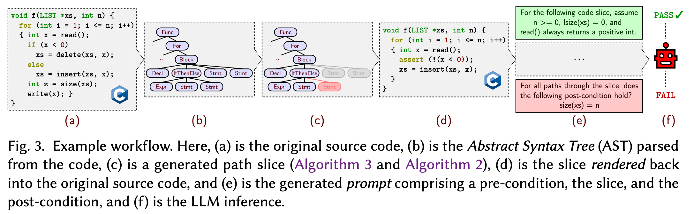
Speed Matching
- Find a pair (30 seconds)
- Describe a research project that you have worked on or that you would like to work on (1 minute)
- Listen to a research project that your pair has worked on or would like to work on (1 minute)
- Brainstorm with your pair on a project that you could work on together (2 minutes)
- Find a new pair (30 seconds) and repeat
Superoptimization (Nov 10)
you have the "slow" expression
x * 2, and you know that there's a "faster" version to be had that can be writtenx << ??for some value of??. Let's ask Z3 what to write there...
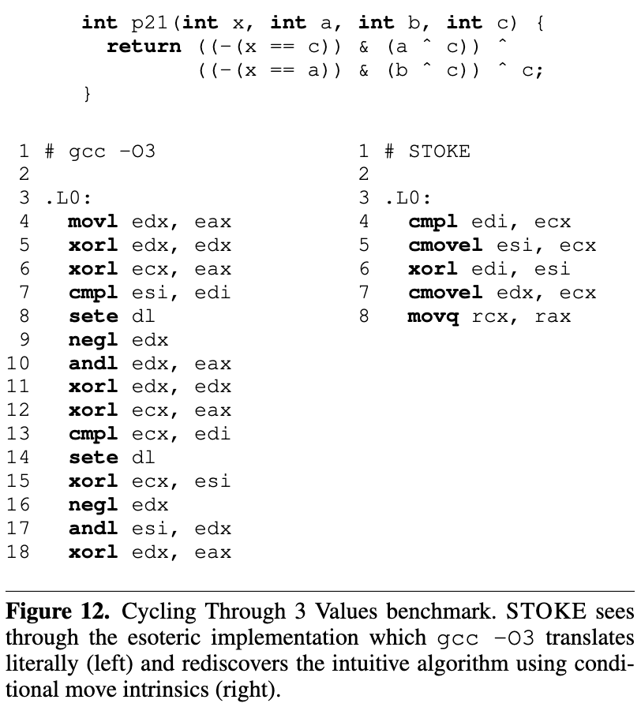
Faster Sorting Algorithms Discovered Using Deep Reinforcement Learning
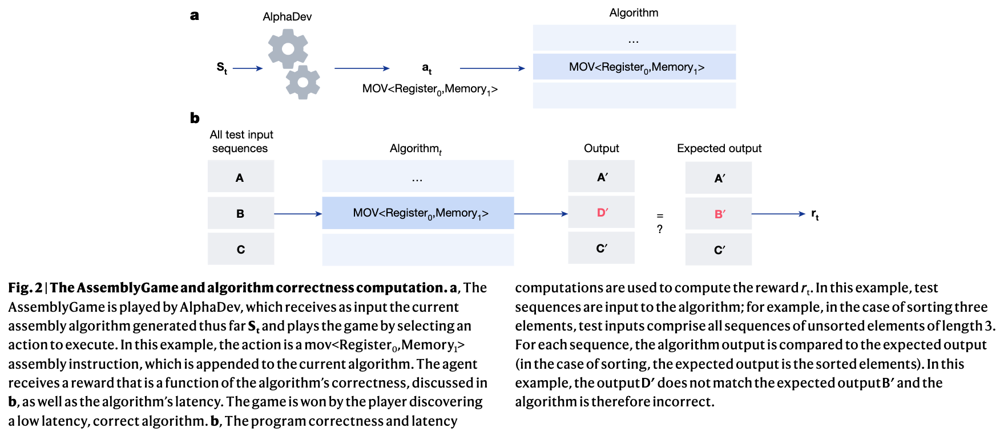
Mathematical Discoveries from Program Search with Large Language Models
Romera-Paredes et al., Nature '23
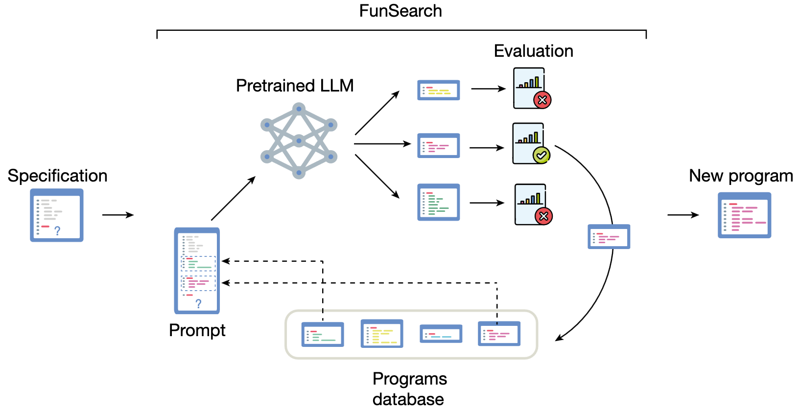
Speed Matching
- Find a pair (30 seconds)
- Describe a research project that you have worked on or that you would like to work on (1 minute)
- Listen to a research project that your pair has worked on or would like to work on (1 minute)
- Brainstorm with your pair on a project that you could work on together (2 minutes)
- Find a new pair (30 seconds) and repeat
Theorem Proving (Nov 17)
We present an automated prover and proof assistant, GPT-f, for the Metamath formalization language, and analyze its performance. GPT-f found new short proofs that were accepted into the main Metamath library, which is to our knowledge, the first time a deep learning based system has contributed proofs that were adopted by a formal mathematics community.
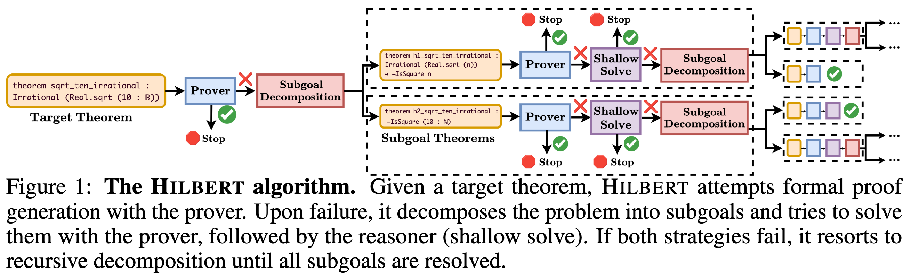
On July 25, Ramana Kumar published a repository containing a
sorry-free "disproof" of the Collatz conjecture, produced with AI assistance. It is not a valid proof because it exploits a bug in the kernel's handling of nested inductive types.
Speed Matching
- Find a pair (30 seconds)
- Describe a research project that you have worked on or that you would like to work on (1 minute)
- Listen to a research project that your pair has worked on or would like to work on (1 minute)
- Brainstorm with your pair on a project that you could work on together (2 minutes)
- Find a new pair (30 seconds) and repeat
Machine-Learning Verification (Nov 24)
This book is about verifying that a neural network behaves according to some set of desirable properties.
Importantly,
A number of people in the verification community, the author included, argue that specification [deciding on the set of desirable properties] is harder than verification—that is, the hard part is asking the right questions!
(vnnlib-version <2.0>)
; Network declaration
(declare-network f
(declare-input X float32 [2,2])
(declare-output Y float32 [1])
)
; Input constraints
(assert (and (>= X[0,0] 0.0) (<= X[0,0] 1.0)))
(assert (and (>= X[0,1] 0.0) (<= X[0,1] 1.0)))
(assert (and (>= X[1,0] 0.0) (<= X[1,0] 1.0)))
(assert (and (>= X[1,1] 0.0) (<= X[1,1] 1.0)))
; Output constraints
(assert (or (<= Y[0] -3.0) (>= Y[0] 0.0)))
Beta-CROWN: Efficient Bound Propagation with Per-neuron Split Constraints for Complete and Incomplete Neural Network Robustness Verification
Bonus or Guest Talks (Dec 01)
Speed Matching
- Find a pair (30 seconds)
- Describe a research project that you have worked on or that you would like to work on (1 minute)
- Listen to a research project that your pair has worked on or would like to work on (1 minute)
- Brainstorm with your pair on a project that you could work on together (2 minutes)
- Find a new pair (30 seconds) and repeat
References
- Seshia, S. A. (2024). EECS 219C: Formal methods: Specification, verification, and synthesis Course website. University of California, Berkeley.
- Chasins, S. E. (2024). CS 294-184: Building user-centered programming tools Course website. University of California, Berkeley.
- Willsey, M. (2024). CS 294-260: Declarative program analysis and optimization Course website. University of California, Berkeley.
- Artificial Intelligence Tool(s): Claude (Sonnet 5), Anthropic; Writing: Claude was used to fix spelling and grammatical mistakes in the syllabus; Project Administration: Claude was used to build and maintain Markdown-to-HTML scripts and keep the Schedule and Reading Bank tables in sync.